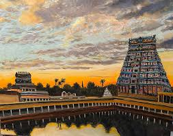

MADURAI TEMPLE

the temple it as roots in the 1st centuryCE,with the current structure dating back to the 16th centuryCE.
The temple is known for stunning Dravidian archetecture , featuring intricate cravings, goupuram and mandapam.
The temple is dedicated to goddess madurai meenakshi, a form of parvati, who is worshipped as the primary deity.
Lord Shiva is also worshipped in the temple as Sundareshwar.The temple has a scared tank called the "potramarai kulam"
The temple celebrate various festivals throughtout the year,including the famous "Meenakshi Thirukalyanam".The temple
was witnessed various historical events and has been ruled by different dynasties.The temple features beautiful sculptures
and cravings showcase the artistic skills of ancient craftsmen.